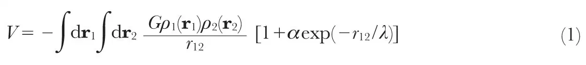
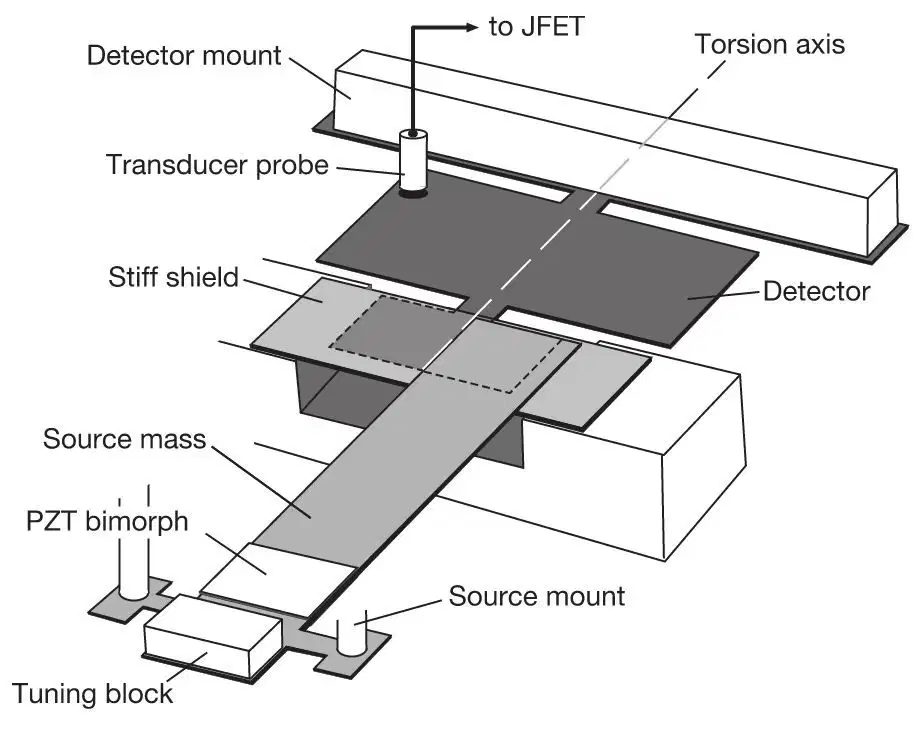
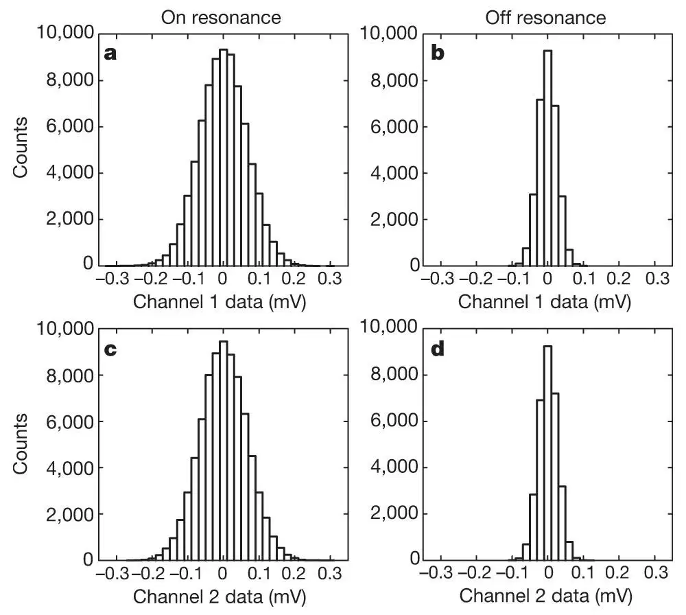
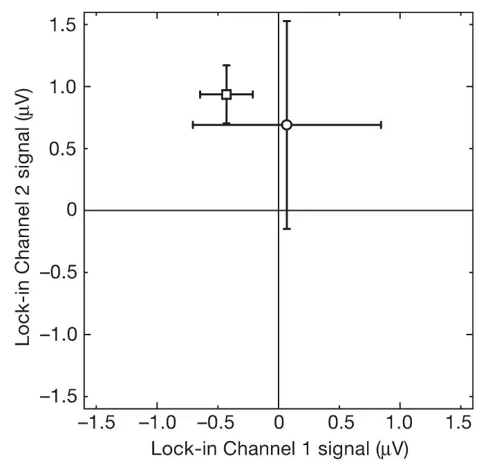
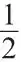
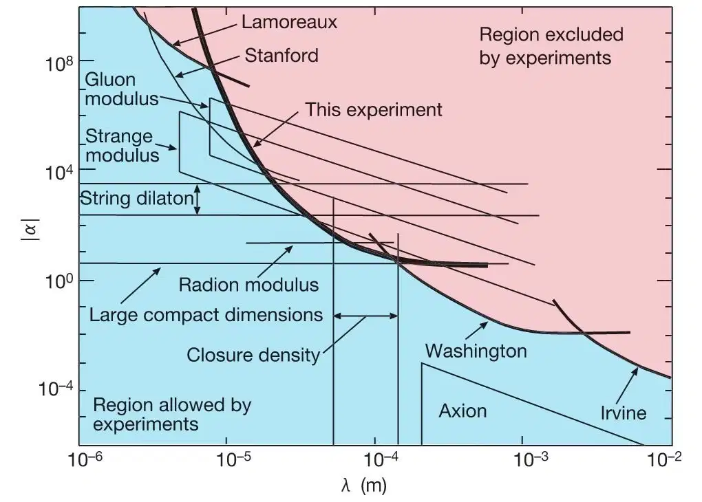

中文
中文J. C. Long et al.
Editor’s Note
Gravity is the weakest of the four fundamental forces, being 40 orders of magnitude weaker than the electromagnetic force. In string theory—an attempt to unify the description of particles and forces—this weakness arises because the force is dissipated in six extra spatial dimensions that are “curled up” and therefore invisible to us. It has been suggested that the effect of these curled-up dimensions might become evident at very small length scales, whereby objects would feel more gravitation force at those scales. Here physicist Joshua Long and colleagues describe an experiment that looked for a deviation of the gravitational force from its familiar inverse-square law on length scales of 100 micrometres. They found no such deviation. 中文
String theory is the most promising approach to the long-sought unified description of the four forces of nature and the elementary particles1, but direct evidence supporting it is lacking. The theory requires six extra spatial dimensions beyond the three that we observe; it is usually supposed that these extra dimensions are curled up into small spaces. This “compactification” induces “moduli” fields, which describe the size and shape of the compact dimensions at each point in space-time. These moduli fields generate forces with strengths comparable to gravity, which according to some recent predictions2-7 might be detected on length scales of about 100 μm. Here we report a search for gravitational-strength forces using planar oscillators separated by a gap of 108 μm. No new forces are observed, ruling out a substantial portion of the previously allowed parameter space4 for the strange and gluon moduli forces, and setting a new upper limit on the range of the string dilaton2,3 and radion5-7 forces. 中文
THE combined potential energy V due to a modulus force and newtonian gravity may be written:

The first term is Newton’s universal gravitation law, with G the gravitational constant, r12 the distance between two points r1 and r2 in the test masses, and  1, 2 the mass densities of the two bodies. The second term is a Yukawa potential, with α the strength of the new force relative to gravity, and λ the range. As for any force-mediating field, the range of the modulus force is related to its mass m by λ=ℏ / mc. Previous tests of Newtonian gravity and searches for new macroscopic forces have covered length scales from light-years to nanometres8-10, and it has been found that new forces of gravitational strength can be excluded for ranges λ from 200 μm to nearly a light-year8,11,12, but limits on new forces become poor very rapidly below 200 μm (refs 9, 13). 中文
1, 2 the mass densities of the two bodies. The second term is a Yukawa potential, with α the strength of the new force relative to gravity, and λ the range. As for any force-mediating field, the range of the modulus force is related to its mass m by λ=ℏ / mc. Previous tests of Newtonian gravity and searches for new macroscopic forces have covered length scales from light-years to nanometres8-10, and it has been found that new forces of gravitational strength can be excluded for ranges λ from 200 μm to nearly a light-year8,11,12, but limits on new forces become poor very rapidly below 200 μm (refs 9, 13). 中文
The strange and gluon moduli arise in a scenario where supersymmetry (a hypothesized symmetry incorporated in string theory that relates bosons to fermions) is broken at 10–100 TeV, and all compactification occurs near the ultrahigh Planck scale of 1019 GeV where gravity is unified (in these scenarios) with other forces. In this case a range of approximately a millimetre is specifically predicted. The dilaton is a scalar field required for the consistency of string theory whose vacuum value fixes the strength of the interaction between strings. It may be interpreted as the modulus describing the size of the tenth space dimension that is compactified in M-theory to yield string theory in nine space dimensions. (M-theory is the structure that unifies the various types of string theory into a single framework1.) The strength α associated with the dilaton can be computed, but the range λ at present can only be constrained by experiment; little is known about the mechanism which gives the dilaton mass. The radion results from a very different scenario in which one or more dimensions compactify at TeV energy scales, but here a range λ accessible to our experiment is again predicted. 中文
The special significance of millimetre scales derives from a mass formula of the form m≈M2 / MP, where MP is the mass associated with the Planck scale, 1019 GeV / c2, and M is a mass of 1–100 TeV / c2, leading to λ in the centimetre to micrometre range. In the strange and gluon moduli case, M is the scale where supersymmetry breaking occurs, whereas in the radion modulus case it corresponds to the size of one or more compact dimensions. This formula also applies to the ADD theory14 (named for its authors) in which two compact extra dimensions of millimetre size modify gravity itself. In the ADD theory M is the fundamental length scale where all physics is unified while m is a mass corresponding to the size of the large compact extra dimensions. Many scenarios of compactification, symmetry breaking and mass generation are still viable, so although the possibility of observing new forces at millimetre scales is exciting, such experiments cannot currently falsify string theory. 中文
The planar geometry of our source and detector masses (Fig. 1) is chosen to concentrate as much mass density as possible at the length scale of interest. It is approximately null with respect to the 1 / r2 newtonian background, a helpful feature in the context of a new force search. A cantilever mode (similar to the motion of a diving board) of the tungsten source mass is driven to a tip amplitude of 19 μm at the resonant frequency of the detector mass. The tungsten detector mass is a double torsional oscillator15; in the resonant mode of interest the two rectangular sections of the detector counter-rotate about the torsion axis, with most of the amplitude confined to the smaller rectangle under the source mass and shield. Torsional motion of the detector will be driven if a mass coupled force is present between the source and detector. The motions are detected with a capacitive transducer, followed by a preamplifier, filters and a lock-in amplifier. To suppress background forces due to electrostatics and residual gas, a stiff conducting shield is fixed between the test masses. With the source at rest, the gap between source and detector is adjusted to 108 μm, and the entire apparatus is placed in a vacuum enclosure and maintained at pressures below 2×10－7 torr. 中文

Fig. 1. Major components of the apparatus. The smaller rectangle of the tungsten detector (under the shield) is 11.455 mm wide, 5.080 mm long and 195 μm thick. The detector is annealed at 1,300 ℃ to increase its mechanical Q to 25,000. In operation the 1,173.085-Hz resonant frequency of the detector is stabilized by actively controlling the detector temperature to 305 K. The tungsten source mass is 35 mm long, 7 mm wide and 305 μm thick. The source mass resonant frequency is tuned to the detector and driven by the PZT (lead zirconate titanate) piezoelectric bimorph. The shield is a 60-μm-thick sapphire plate coated with 100 nm of gold on both sides. The test masses and the shield are supported by three separate five-stage passive vibration isolation stacks23, each providing approximately 200-dB attenuation at 1 kHz. Mechanical probes are used to directly measure the relative orientation and position of each component, and to measure the source mass amplitude. Detector motions are sensed by a cylindrical capacitive probe supported 100 μm above a rear corner of the large rectangle of the detector mass. The probe is biased at 200 V through a 100 GΩ resistor, and connected to an SK 152 junction field-effect transistor (JFET) through a blocking capacitor. The JFET noise temperature of 100 mK is more than sufficient to detect 305 K thermal motions of the detector mass. The JFET preamplifier is followed by a second preamplifier, filters, and finally a two-phase lock-in amplifier. The total voltage gain from the capacitive probe to the lock-in input is approximately 1,600. A crystal-controlled oscillator provides a reference signal for the lock-in amplifier and drives the source mass PZT through a 1∶10 step-up transformer. 中文
Figure 2 shows histograms of the raw data, collected with the source mass drive tuned both on and off the detector resonant frequency. Each plot contains data from one channel of the lock-in amplifier, corresponding to one of two orthogonal phases of the detector motion at the drive frequency. The widths of the off-resonance distributions are due to preamplifier noise, whereas the on-resonance distributions are due to the sum of preamplifier noise and detector thermal motions. The on- and off-resonance means shown in Fig. 3 agree within their standard deviations, indicating the absence of a significant resonant force signal. 中文

Fig. 2. Distributions of data samples. Data were recorded at 1 Hz with a lock-in bandwidth chosen to include the noise power of the detector thermal oscillations, which was used for calibration. Each data cycle began with five 120-sample diagnostic runs with a direct-current bias of 5–10 V applied to the shield to induce a large test force, transmitted from source to detector via deflections of the shield. The biased runs were recorded at five drive frequencies separated by 15 mHz to cover the detector resonance. The shield was then grounded and the cycle continued with 720 samples with the drive tuned on-resonance (a, c) and 288 samples with the drive tuned 2 Hz below the detector resonance (b, d). The off-resonance run provided a continuous zero check. A total of 108 such cycles were acquired over five days yielding 77,760 on-resonance samples. The biased diagnostic data show that the source mass amplitude, the detector Q and resonant frequency, and the electronic gain were all stable throughout the data set. 中文

Fig. 3. Means of the off- and on-resonance data samples. The circular point with the larger standard deviations is the on-resonance mean. Correlations between nearby samples have been accounted for in computing the standard deviations shown by error bars. The small offset from the origin is due to leakage of the reference signal internal to the lock-in. Measurements with the shield removed and a bias voltage between the source and detector show that the phase for an attractive force is 189°. The on-resonance mean minus the off-resonance mean at 189° is -0.44±0.82 μV. Based on calibration via the equipartition theorem this corresponds to a lumped force amplitude at the edge of the detector (smaller rectangle in Fig. 1) of -1.2±2.2 fN, where the negative sign indicates repulsion. 中文
Additional cycles of data were acquired with the source mass on the opposite side of the detector, with a larger, 1-mm gap, and with reduced overlap between the source and detector. No resonant signal was observed in any of these sessions, making it unlikely that the observed null result is due to a fortuitous cancellation of surface potential, magnetic, and / or acoustic effects. Several on-resonance runs were acquired with different transducer probe bias voltage settings. The observed linear dependence on bias voltage of the root-mean-square (r.m.s.) fluctuations in these data is consistent with detector motion due only to thermal noise and rules out additional motion from transducer back-action noise. This check is important because the magnitude of the detector thermal motion is used for calibration. 中文
Data from diagnostic runs with a bias voltage applied to the shield can be used to estimate the minimum size of the residual potential difference between the shield and the (grounded) test masses needed to produce a resonant signal. We find that at least 1.5 V would be needed to generate an effect above detector thermal noise, about an order of magnitude larger than the residual potential difference actually measured between the shield and test masses. The most important magnetic background effect involves eddy currents generated when the source mass moves in an external magnetic field. Fields produced by the source currents create eddy currents in the detector, which then interact with the external field. Studies of this effect with large applied magnetic fields show that the ambient field actually present cannot generate a signal greater than one-fifth of the thermal-noise-limited sensitivity. 中文
The instrument can be calibrated in several ways, but the most accurate method is to use the r.m.s. thermal motion of the detector, which dominates the on-resonance distributions in Fig. 2. According to equipartition, the average kinetic energy in each normal mode of the detector is equal to

kT; where k is Boltzmann’s constant and T is the temperature. The normal mode amplitude corresponding to the thermal energy can be calculated, and by comparing this with the observed voltage fluctuations a calibration can be established relating mode amplitude to voltage. A further calculation must be done to find the mode amplitude resulting from any hypothesized force. 中文
For given values of α and λ the driving force due to equation (1) is computed at 30 values of the source mass phase using Monte Carlo integration, and then the Fourier amplitude of the driving force at the resonant frequency is computed. Using the observed statistics of the data we construct a likelihood function for α for each value of λ and compute 95% confidence-level upper limits on α, assuming a uniform prior probability density function (PDF) for α. This analysis is complicated by the presence of uncertainties in the geometrical and mechanical parameters needed to compute the driven displacement. To include these effects we actually construct a likelihood function of α and the uncertain parameters, and then integrate out the uncertain parameters using prior PDFs based on their experimental uncertainties. The most important of these parameters is the 108-μm equilibrium gap between source and detector which has a 6-μm uncertainty. Further details of our analysis methods are given elsewhere16. 中文
Our results are shown in Fig. 4, together with other experimental limits and the theoretical predictions. Our limit is the strongest available between 10 and 100 μm. When the gluon and strange moduli forces were first proposed, the areas of their allowed regions in the (α, λ) parameter space were 4.4 and 5.2 square decades respectively. By now they are nearly excluded with only 0.75 and 1.4 square decades still available. Our limit on the dilaton range for α=2,000 is λ<23 μm (corresponding to m>8.6 meV), a factor of two better than the previous limit. For the radion modulus we set an upper limit on λ of 88 μm, close to the value of 40 μm estimated in the theory (for one extra dimension). For the ADD theory with two large extra compact dimensions, we do not quite reach the limit on the size of these dimensions already set in refs 11 and 12. 中文

Fig. 4. Current limits on new gravitational strength forces between 1 μm and 1 cm. Our result is a 95% confidence-level upper limit on the Yukawa strength α as a function of range λ (solid bold curve). It is shown together with limits from previous experiments (Lamoreaux24, Washington12, Irvine25) and theoretical predictions newly constrained (gluon modulus4, strange modulus4, string dilaton2, radion modulus7). An unpublished limit from the Stanford experiment26 is also shown; it is derived in the presence of a background force. The dilaton strength is somewhat model-dependent and there is a range of values reported in the literature2. We have chosen the region 200<α<3,000, which includes most values. Also shown are predictions from the ADD theory with two large compact extra dimensions14,27,28, axion mediated forces20,21, and the λ region corresponding to a cosmological energy density between 1.0 and 0.1 times the closure density17. For the moduli, dilaton, and ADD theories, the upper bounds on λ of the regions shown are set at the experimental limits that were known at the time the theories were proposed. 中文
Besides forces from extra dimensions, two other ideas have suggested new weak forces at submillimetre scales. The cosmological energy density needed to close the universe, if converted to a length by taking its inverse fourth root (in natural units where ℏ=c=1), corresponds to about 100 μm. This fact has led to repeated attempts17-19 to address difficulties connected with the very small observed size of Einstein’s cosmological constant by introducing new forces with a range near 100 μm. Our result is the best upper bound on α in this region, but we have not quite reached gravitational sensitivity. Finally, the oldest of these predictions, still out of reach, is the very feeble axion-mediated force20,21. The axion is a field intended to explain why the violation of charge-parity symmetry is so small in quantum chromodynamics, the theory of the strong nuclear force. 中文
Experiments of the sort reported here constrain string-inspired scenarios by setting very restrictive limits on predicted submillimetre forces. Of course, the actual observation of any new force would be a major advance. Because several theoretical scenarios point especially to these length scales, it is an important goal for the future to reach gravitational strength at even shorter distances, perhaps down to 10 μm. Experiments attempting to reach such distances will confront rapidly increasing background forces, especially electrostatic forces arising from the spatially non-uniform surface potentials of metals22. Electric fields due to surface potentials can be shielded with good conductors, but because of the finite stiffness of any shield they still cause background forces to be transmitted between test masses. Stretched membranes (as used by the Washington group) are more effective than stiff plates at the shortest distances, but it remains to be seen down to what distance the background forces can be effectively suppressed. 中文
(421, 922-925; 2003)
Joshua C. Long*†, Hilton W. Chan*†, Allison B. Churnside*, Eric A. Gulbis*, Michael C. M. Varney* & John C. Price*
* Physics Department, University of Colorado, UCB 390, Boulder, Colorado 80309, USA
† Present addresses: Los Alamos Neutron Science Center, LANSCE-3, MS-H855, Los Alamos, New Mexico 87545, USA (J.C.L.); and Physics Department, Stanford University, Stanford, California 94305, USA (H.W.C.)
Received 21 October 2002; accepted 13 January 2003; doi:10.1038 / nature01432.
References:
1. Greene, B. The Elegant Universe: Superstrings, Hidden Dimensions, and the Quest for the Ultimate Theory (Norton, New York, 1999).
2. Kaplan, D. B. & Wise, M. B. Couplings of a light dilaton and violations of the equivalence principle. J. High Energy Phys. 8, 37 (2000).
3. Taylor, T. R. & Veneziano, G. Dilaton couplings at large distances. Phys. Lett. B 213, 450-454 (1988).
4. Dimopoulos, S. & Giudice, G. Macroscopic forces from supersymmetry. Phys. Lett. B 379, 105-114 (1996).
5. Antoniadis, I. A possible new dimension at a few TeV. Phys. Lett. B 246, 377-384 (1990).
6. Antoniadis, I., Dimopoulos, S. & Dvali, G. Millimeter-range forces in superstring theories with weak- scale compactification. Nucl. Phys. B 516, 70-82 (1998).
7. Chacko, Z. & Perazzi, E. Extra dimensions at the weak scale and deviations from Newtonian gravity. Preprint hep-ph / 0210254 available at〈arXiv.org〉(2002).
8. Fischbach, E. & Talmadge, C. The Search for Non-Newtonian Gravity (Springer, New York, 1999).
9. Bordag, M., Mohideen, U. & Mostepanenko, V. M. New Developments in the Casimir effect. Phys. Rep. 353, 1-205 (2001).
10. Long, J. C., Chan, H. W. & Price, J. C. Experimental status of gravitational-strength forces in the sub-centimeter regime. Nucl. Phys. B 539, 23-34 (1999).
11. Hoyle, C. D. et al. Sub-millimeter tests of the gravitational inverse-square law: A search for “large” extra dimensions. Phys. Rev. Lett. 86, 1418-1421 (2001).
12. Adelberger, E. G. Sub-mm tests of the gravitational inverse-square law. Preprint hep-ex / 0202008 available at〈arXiv.org〉(2002).
13. Fischbach, E., Krause, D. E., Mostepanenko, V. M. & Novello, M. New constraints on ultrashort-ranged Yukawa interactions from atomic force microscopy. Phys. Rev. D 64, 075010 (2001).
14. Arkani-Hamed, N., Dimopoulos, S. & Dvali, G. The hierarchy problem and new dimensions at a millimeter. Phys. Lett. B 429, 263-272 (1998).
15. Kleiman, R. N., Kaminsky, G. K., Reppy, J. D., Pindak, R. & Bishop, D. J. Single-crystal silicon high-Q torsional oscillators. Rev. Sci. Instrum. 56, 2088-2091 (1985).
16. Long, J. C. et al. New experimental limits on macroscopic forces below 100 microns. Preprint hep-ph / 0210004 available at〈arXiv.org〉(2002).
17. Beane, S. R. On the importance of testing gravity at distances less than 1 cm. Gen. Rel. Grav. 29, 945-951 (1997).
18. Sundrum, R. Towards an effective particle-string resolution of the cosmological constant problem. J High Energy Phys. 7, 1 (1999).
19. Schmidhuber, C. Old puzzles. Preprint hep-th / 0207203 available at〈arXiv.org〉(2002).
20. Moody, J. E. & Wilczek, F. New macroscopic forces? Phys. Rev. D 30, 130-138 (1984).
21. Rosenberg, L. J. & van Bibber, K. A. Searches for invisible axions. Phys. Rep. 325, 1-39 (2000).
22. Price, J. C. in Proc. Int. Symp. on Experimental Gravitational Physics (eds Michelson, P., En-ke, H. & Pizzella, G.) 436-439 (World Scientific, Singapore, 1988).
23. Chan, H. W., Long, J. C. & Price, J. C. Taber vibration isolator for vacuum and cryogenic applications. Rev. Sci. Instrum. 70, 2742-2750 (1999).
24. Lamoreaux, S. K. Demonstration of the Casimir force in the 0.6 to 6 μm range. Phys. Rev. Lett. 78, 5-8 (1997).
25. Hoskins, J. K., Newman, R. D., Spero, R. & Shultz, J. Experimental tests of the gravitational inverse-square law for mass separations from 2 to 105 cm. Phys. Rev. D 32, 3084-3095 (1985).
26. Chiaverini, J., Smullin, S. J., Geraci, A. A., Weld, D. M. & Kapitulnik, A. New experimental constraints on non-Newtonian forces below 100 microns. Preprint hep-ph / 0209325 available at〈arXiv.org〉(2002).
27. Floratos, E. G. & Leontaris, G. K. Low scale unification, Newton’s law and extra dimensions. Phys. Lett. B 465, 95-100 (1999).
28. Kehagias, A. & Sfetsos, K. Deviations from the 1 / r2 Newton law due to extra dimensions. Phys. Lett. B 472, 39-44 (2000).
Acknowledgements. We thank E. Lagae for work in the laboratory, and C. Briggs, T. Buxkemper, L. Czaia, H. Green, S. Gustafson and H. Rohner of the University of Colorado and JILA instrument shops for technical assistance. We also gratefully acknowledge discussions with S. de Alwis, B. Dobrescu and S. Dimopoulos. This work is supported by grants from the US National Science Foundation.
Competing interests statement. The authors declare that they have no competing financial interests.
Correspondence and requests for materials should be addressed to J.C.P. (e-mail: john.price@colorado.edu).